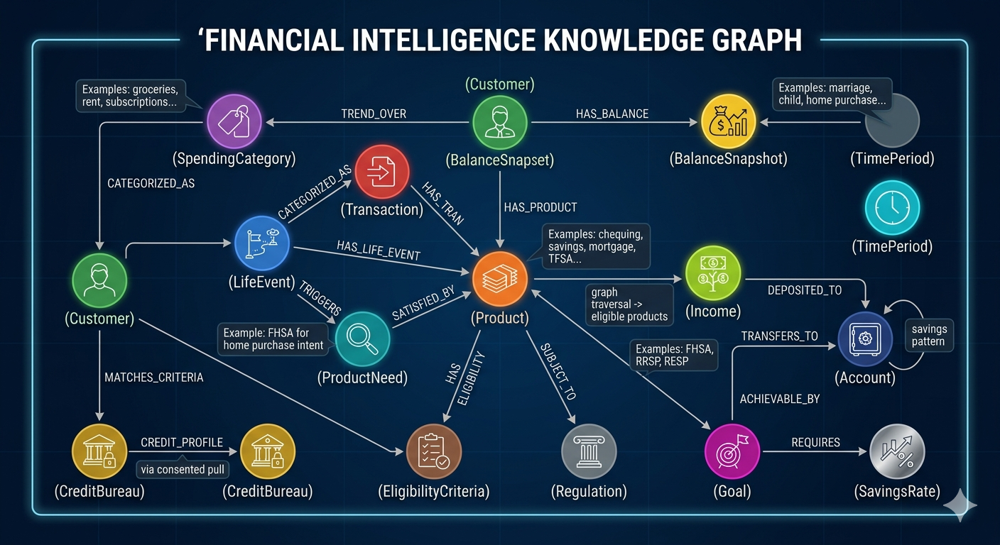
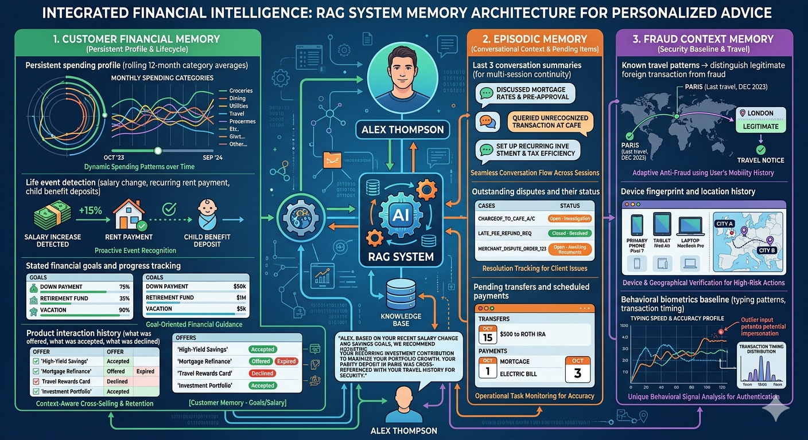

This is Part 5 of the RAG Enterprise Series. It assumes familiarity with the four RAG levels. Start with Part 1 if you haven't already.
Personal banking serves the broadest demographic of any domain in this series — from financially literate HNW individuals to first-generation banking customers. The RAG system must be a financial expert and a plain-language explainer simultaneously, at 10M+ daily transaction scale.
5. Domain 4 — Personal Banking Systems
5.1 Domain Characteristics and Challenges
Personal banking AI serves the broadest demographic — from financially literate HNW individuals to first-generation banking customers with limited financial literacy. The system must simultaneously be a financial expert and a plain-language explainer.
Regulatory landscape:
- OSFI B-7 (cyber security), OSFI B-10 (third-party risk) — Canadian context
- FCAC (Financial Consumer Agency of Canada) — consumer protection requirements
- PCI-DSS — payment card data handling
- FINTRAC — AML/ATF transaction reporting requirements
- Open Banking (Canada: Budget 2024 framework) — data portability implications
Domain challenges:
| Challenge | Why It's Hard |
|---|---|
| Cross-product reasoning | Customer question may span chequing, mortgage, credit card, and TFSA simultaneously |
| Fraud signal disambiguation | Is this unusual transaction fraud or did the customer travel? Context determines response |
| Financial literacy gap | "What's the difference between my RRSP and TFSA?" is L1. "Should I maximize my TFSA or RRSP this year?" is personalization + tax reasoning |
| Dispute complexity | A credit card dispute involves merchant data, transaction logs, card scheme rules, and timeline analysis |
| Life event triggering | A salary increase, home purchase, or job loss should proactively trigger relevant product recommendations |
| Transaction volume | A major bank processes 10M+ daily transactions — agentic RAG at the customer level must be computationally efficient |
5.2 Level 1 — Vanilla RAG
Use case: Product FAQ and self-service help — "What documents do I need to open a FHSA?", "What's the daily e-transfer limit?", "How do I dispute a transaction?"
Implementation: Static knowledge base (product brochures, help center articles) → dense retrieval → response generation.
Real-world examples: RBC's Arya chatbot, TD's Clari, Scotiabank's Scotia Advisor. All major Canadian banks have deployed L1 chatbots handling tier-1 FAQ volume since 2019–2021. Average: 40–60% call deflection rate for simple queries.
Where L1 fails for personal banking:
- "Why was my rent pre-authorized debit rejected this morning?" — requires the customer's actual account data, transaction logs, and NSF analysis. Static knowledge cannot answer this.
- "I'm trying to e-transfer $2,500 but it's being blocked" — requires real-time account state, velocity limits, and fraud flag status.
- Any question prefixed with "my" or "mine" — personal banking is inherently personalized; L1 has no access to customer context.
5.3 Level 2 — Hybrid RAG
Use case: Customer service augmentation — combining account data retrieval with product knowledge, transaction dispute support.
Why BM25 is critical in banking:
- Transaction descriptions are structured text — "TIM HORTONS #12345 TORONTO ON", "AMAZON.CA PYMT", "ROGERS COMM INTERNET"
- Customer-facing queries often contain exact merchant names, dollar amounts, dates — these must match precisely
- Account numbers, card numbers (masked), product codes need exact retrieval
Example — Transaction dispute support:
Customer: "I was charged $127.43 by someone called ACME DIGITAL SERVICES on March 15th
and I don't recognize it."
Dense path: semantic similarity to "unrecognized charge dispute process unfamiliar merchant"
→ retrieves dispute policy documents, timeline requirements, provisional credit rules
Sparse path: BM25 exact match on ["ACME DIGITAL SERVICES", "$127.43", "March 15"]
→ retrieves actual transaction record from account data
Reranker: Merges both paths → surfaces the specific transaction + dispute process for that merchant category
Output: "We found a transaction of $127.43 from ACME DIGITAL SERVICES on March 15th.
This appears to be a digital subscription merchant. Here's how to dispute it:
[dispute steps]. If the charge is unauthorized, provisional credit will be applied
within 5 business days while we investigate."
Real-world systems:
- JPMorgan COiN — hybrid NLP system for commercial loan document analysis
- Capital One's Eno — hybrid retrieval for transaction pattern recognition
- CIBC's Ask CIBC — hybrid FAQ + account data retrieval
5.4 Level 3 — GraphRAG
Use case: Holistic financial health advisor, complex product eligibility, life-event driven recommendations.
Personal banking ontology:

Query example — Goal-based financial planning:
"I'm 28, just got a $15k raise, trying to pay off my student loan ($18k at 6.5%), save for a house down payment (need $80k, 3-year goal), and build an emergency fund. Help me allocate this raise."
Graph traversal:
1. Customer → [HAS_PRODUCT: Student loan $18k @ 6.5%] — interest cost = $1,170/yr
2. Emergency fund: Customer → [HAS_BALANCE: Chequing + Savings] → $3,200 total →
Financial rule: 3-6 months expenses (graph: spending average = $3,400/mo) → need $10-20k
3. FHSA eligibility: Customer → [NOT_HAS_PRODUCT: FHSA] + [GOAL: first home] → ELIGIBLE
FHSA: $8,000/yr contribution room → tax deduction + tax-free growth → 3 years = $24,000
4. RRSP: Marginal tax rate for $X income → calculate RRSP deduction value
5. Goal graph: $80k down payment in 3 years on savings rate X → requires $2,220/mo savings
6. Trade-off: 6.5% student loan interest vs. FHSA/RRSP tax shelter value
At 30% marginal rate: $8k RRSP contribution = $2,400 tax refund → net cost of loan payoff vs. shelter
7. Synthesize: Priority allocation — Emergency fund → FHSA ($8k/yr) → Student loan aggressively → RRSP
No single document contains this logic — it is constructed from the relationship graph across products, regulatory rules, tax implications, and customer-specific financial state.
Real-world implementations:
- RBC's NOMI (Notice of Money Intelligence) — uses graph-like pattern recognition for spending insights and proactive recommendations
- Mint (Intuit) — spending categorization graph for financial health
- BMO's Financial Coach (AI-powered) — goal-based planning with product graph
5.5 Level 4 — Agentic RAG
Use case: Proactive financial monitoring, fraud pattern investigation, complex complaint resolution, mortgage pre-qualification assessment.
Example — Proactive cash flow diagnosis:
"Why has my cash flow been consistently negative for the past 3 months?"
Agent loop:
Turn 1: Retrieve transaction history — last 90 days
Turn 2: Categorize transactions → spending categories (automated via embedding-based classification)
Turn 3: Compare to 90-day prior period → identify category-level changes
Turn 4: Identify anomalies:
- "Subscriptions" category: increased by $340/mo → investigate
Turn 5: Drill down on subscriptions → retrieve subscription transaction details
Turn 6: Reflect: Do I know why income changed? → Query income deposits
Turn 7: Income deposits: same job, but timing shifted — pay period changed from bi-weekly to monthly
→ cash flow optics changed (lumpier income)
Turn 8: Also identify: mortgage renewal at higher rate in Month 1 → payment increased $387/mo
Turn 9: Synthesize narrative:
"Your negative cash flow over the last 3 months is primarily explained by:
(1) Your mortgage payment increased by $387/mo when your rate renewed at 5.84% in January.
(2) You added 3 new streaming/software subscriptions totaling ~$45/mo in February.
(3) Your pay cycle shifted from bi-weekly to monthly, making month-end cash flow appear tighter.
Your underlying income is unchanged. Here are 3 options to restore positive cash flow..."
Real-world systems:
- RBC NOMI — real-time transaction analysis with proactive nudges (closest Canadian L4 equivalent)
- Trim / Copilot — subscription detection and cash flow analysis
- Plaid AI — agentic transaction intelligence layer
- Cleo (UK challenger bank AI) — conversational financial health agent, multi-turn reasoning
5.6 Supporting Elements — Personal Banking Domain
Memory:
Customer financial memory:
- Persistent spending profile (rolling 12-month category averages)
- Life event detection (salary change, recurring rent payment, child benefit deposits)
- Stated financial goals and progress tracking
- Product interaction history (what was offered, what was accepted, what was declined)
Episodic memory:
- Last 3 conversation summaries (for multi-session continuity)
- Outstanding disputes and their status
- Pending transfers and scheduled payments
Fraud context memory:
- Known travel patterns → distinguish legitimate foreign transaction from fraud
- Device fingerprint and location history
- Behavioral biometrics baseline (typing patterns, transaction timing)

Prompt Engineering:
Banking assistant system prompt:
"You are a personal financial assistant for [Customer Name] at RBC.
Customer profile: [INJECT_SEGMENT: Mass retail | Premium | Private Banking]
Financial summary: [INJECT_BALANCE_SUMMARY, SPEND_SUMMARY_30D, PRODUCT_LIST]
Active alerts: [INJECT_OPEN_DISPUTES, PENDING_ACTIONS]
Regulatory constraint: You cannot provide investment advice or tax advice.
You can describe products, explain account activity, and provide financial education.
Tone: Plain language. Avoid jargon. The customer may not have financial background.
Privacy: Never display full account numbers. Use masked format (****1234).
Escalation trigger: If customer mentions fraud, financial hardship, or distress,
escalate to human agent immediately."
Financial literacy calibration:
"Assess user financial literacy from their message. If they use technical terms
(amortization, marginal tax rate), respond at expert level.
If they use casual language (save for a house, pay down my debt), use plain language."
Part of the RAG Enterprise Series. Next: The RAG Supporting Stack — Memory, Prompt Engineering, Fine-tuning, and Embeddings.